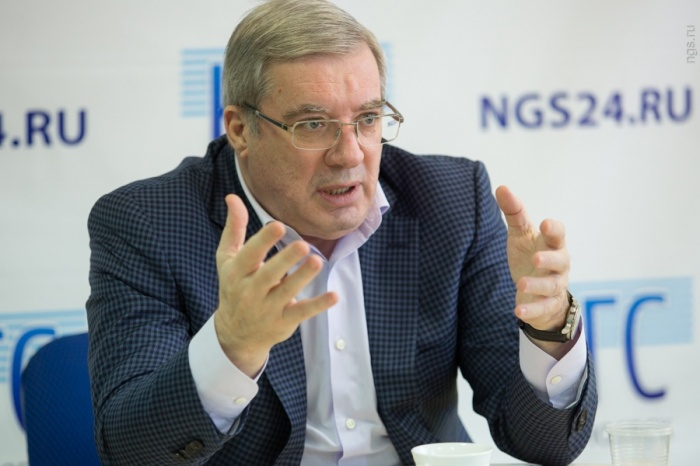

КРАСНОЯРСК, 27 сен — РИА Новости. Губернатор Красноярского края Виктор Толоконский ушел в отставку, сообщил на своей странице в Facebook вице-спикер краевого парламента Алексей Клешко.
"Толоконский сейчас: "Я ухожу. И даже уезжаю". Говорит волнуясь. Это очень чувствуется", — написал парламентарий.
Заместитель председателя правительства Дмитрий Козак. Архивное фото
© РИА Новости / Максим Блинов
Перейти в фотобанк
Козак допустил отставку еще нескольких глав регионов
Клешко добавил, что в зале присутствуют члены правительства, депутаты, руководители краевых органов государственной власти. "Он (Толоконский — Прим. ред.) напомнил основные вехи — рост бюджета за 3 года на 40%, подготовку к Универсиаде, разработку стратегии развития края, обновление социального законодательства", — написал Клешко.
По словам парламентария, Толоконский выразил сожаление, что не все проекты реализованы до конца, извинился перед коллегами, если кого-то обидел и кому-то не хватило душевного тепла, и добавил, что бывает вспыльчив, но всегда работал с любовью. Также Толоконский заявил, что у него пока нет планов относительно нового места работы.
Виктор Толоконский возглавлял Красноярский край с 2014 года.
Портфель чиновника.
Архивное фото
© РИА Новости / Алексей Дружинин

"Коммерсантъ" анонсировал возможную серию отставок губернаторов
Накануне источник в российском парламенте рассказал РИА Новости, что основными претендентами на пост красноярского губернатора являются глава ФАНО Михаил Котюков и руководитель Оборонпрома Сергей Сокол.
Это уже третья отставка главы региона с начала недели. Накануне Владимир Путин подписал указ об увольнении Валерия Шанцева с поста губернатора Нижегородской области, а в понедельник утвердил отставку самарского губернатора Николая Меркушкина.
Вице-премьер Дмитрий Козак предположил в беседе с журналистами, что еще несколько глав регионов могут покинуть свои посты в ближайшее время.
РИА Новости https://ria.ru/politics/20170927/1505646479.html